8 de novembro de 2026 · Bento Gonçalves/RS
Obrigado!
Obrigado!
Cada passo fez a diferença
O Treino Solidário de Prevenção à Diabetes foi um sucesso graças a cada pessoa que correu, caminhou, doou alimentos, trabalhou como voluntária ou simplesmente veio torcer. Muito obrigado por fazer parte desta corrente pela saúde da nossa comunidade.
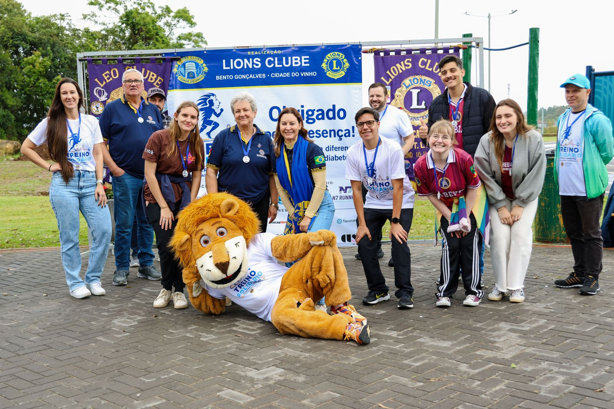
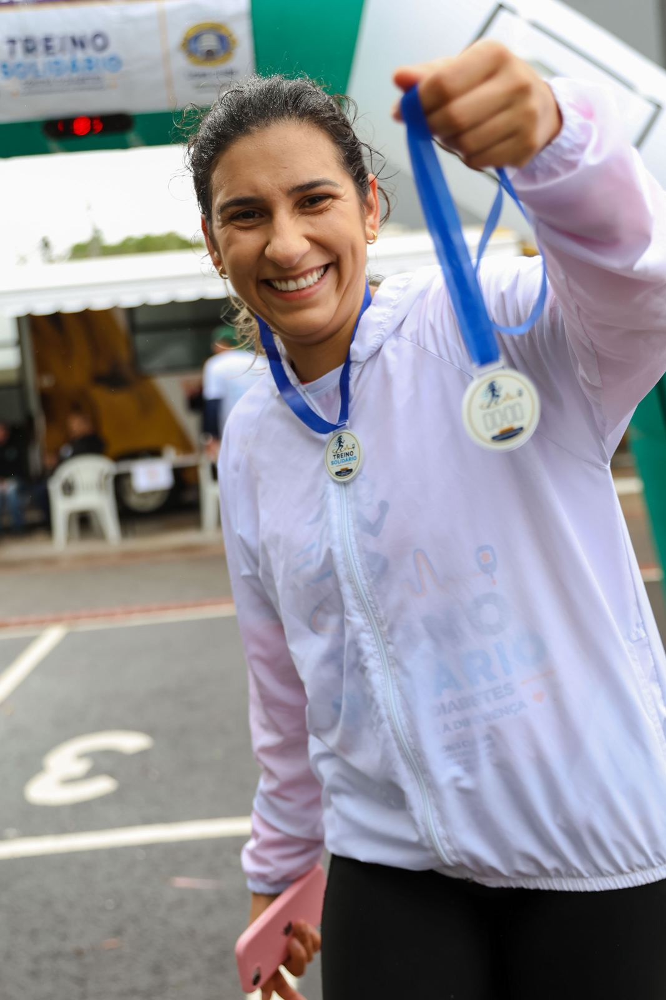
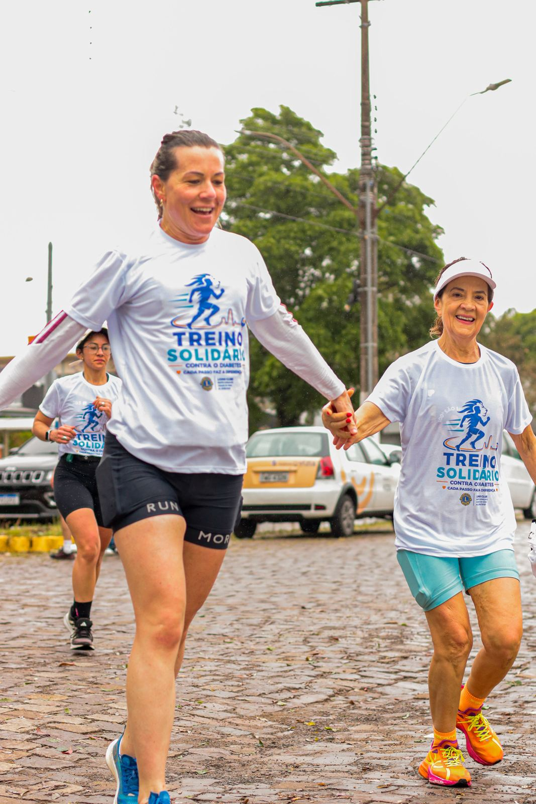
5,09km
de percurso pelas ruas de Bento
3
modalidades: corrida, caminhada e kids
250m
de alegria na Corrida Kids
15
patrocinadores que abraçaram a causa
Galeria
Como foi o nosso dia
Mesmo com o tempo nublado, a pista se encheu de energia. Clique numa foto para ver em tamanho maior.


Muito obrigado
A quem tornou tudo possível
Nosso agradecimento especial aos patrocinadores, parceiros e apoiadores que acreditaram na causa e ajudaram a levar prevenção e saúde para a comunidade de Bento Gonçalves.Patrocínio Master
Patrocinadores Master
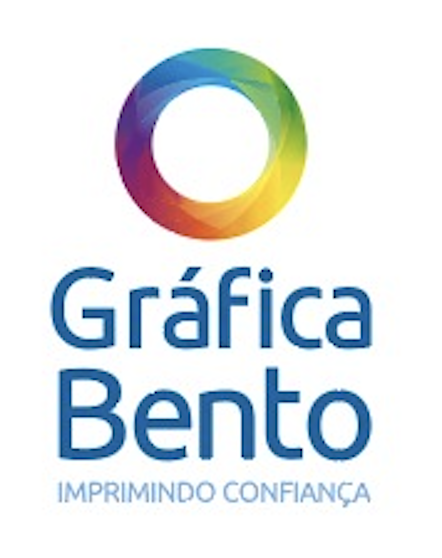
Patrocínio
Patrocinadores
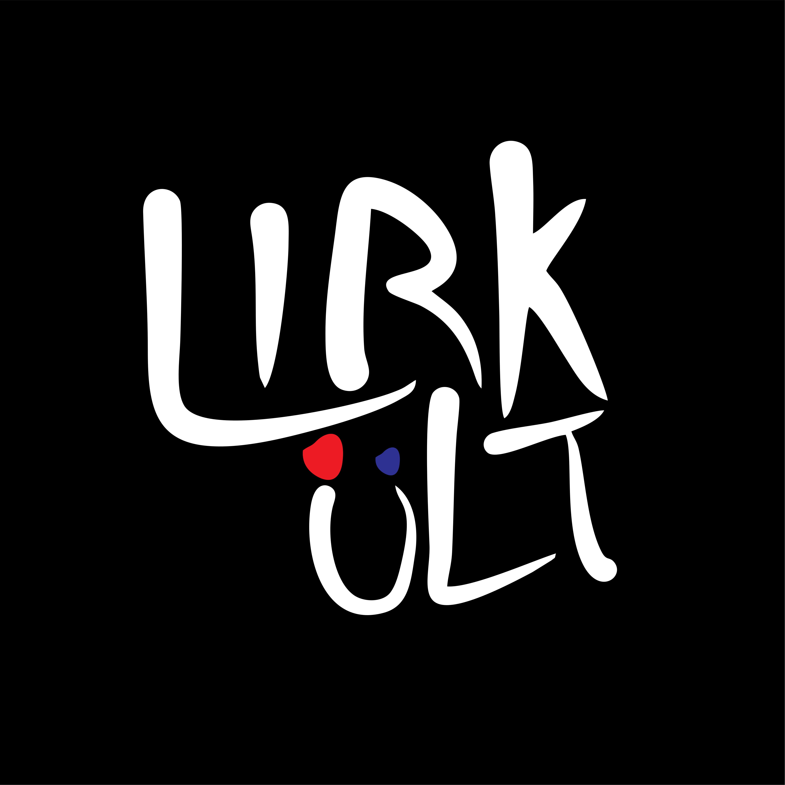
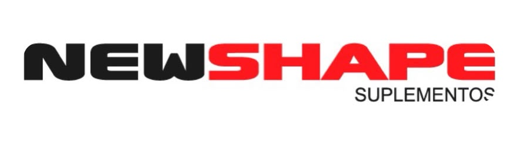
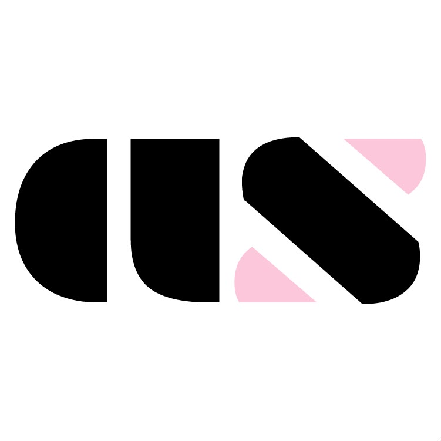
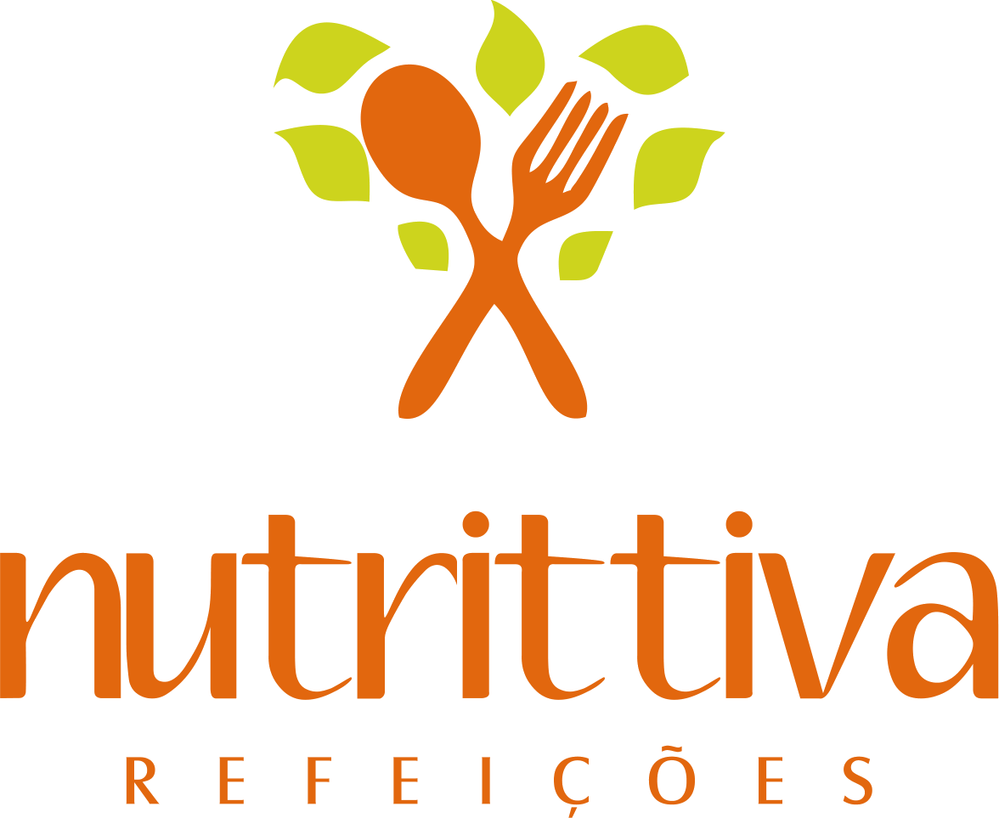
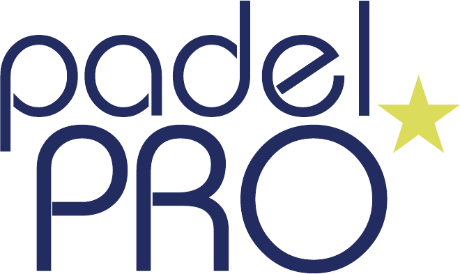
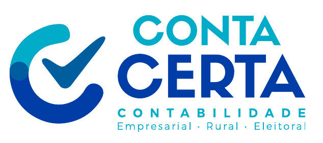
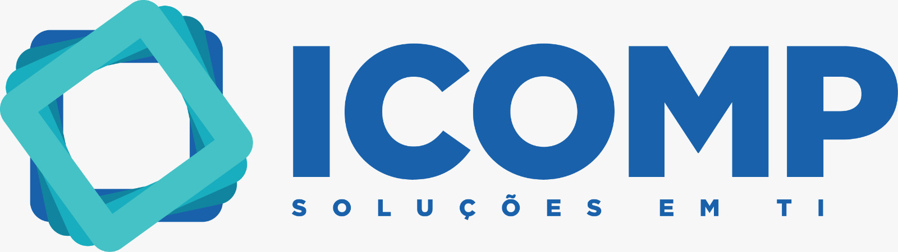
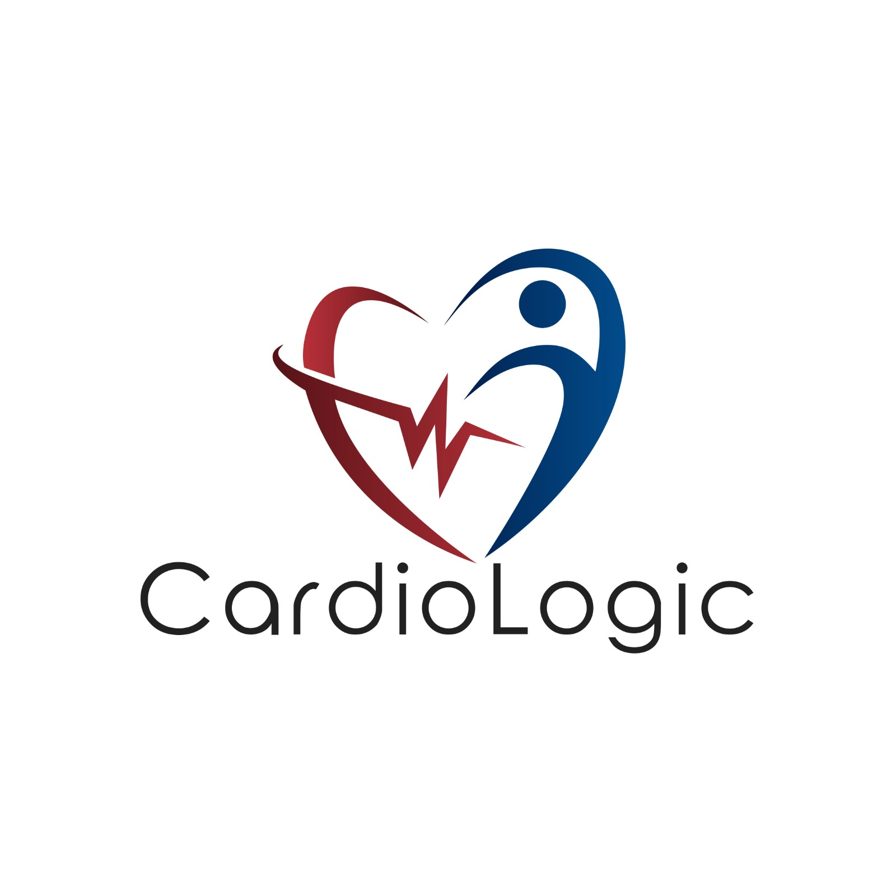
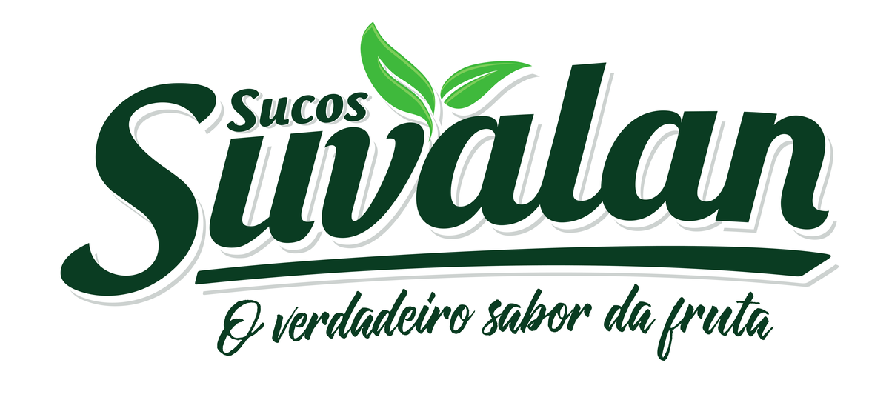
Realização
 Lions Clube Bento Gonçalves Cidade do Vinho
Lions Clube Bento Gonçalves Cidade do Vinho
Apoio
 Prefeitura Municipal de Bento Gonçalves · N7
Prefeitura Municipal de Bento Gonçalves · N7
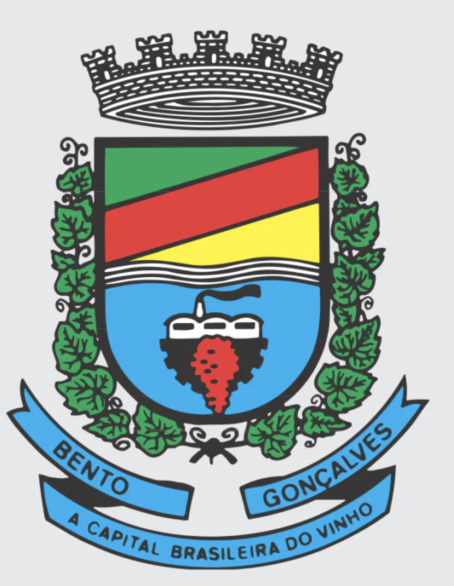
Até a próxima
Nos vemos
Nos vemos
em 2027!
A próxima edição já está nos nossos planos. Até lá, siga se cuidando: movimente-se, alimente-se bem e faça seus exames em dia.
Quer apoiar a edição 2027? Fale com a gente: lionsclubebgcidadedovinho@gmail.com